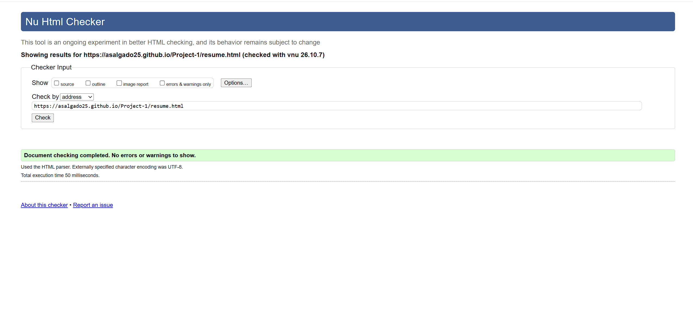

Abisai Salgado
Contact Information
Chicago, IL
312-414-7981
abisaisalgado6@gmail.com
Professional Summary
I am an Applied Cybersecurity and Information Technology student at Illinois Institute of Technology with hands-on experience in hardware repair, networking, and troubleshooting. I have experience assembling and disassembling computers and mobile devices, configuring systems, and completing networking labs. I am bilingual in English and Spanish and enjoy learning new technologies.
Education
Illinois Institute of Technology
Bachelor of Applied Cybersecurity and Information Technology
Expected Graduation: 2028
Technical Skills
- Python (Beginner)
- Java (Beginner)
- Computer Hardware Repair
- Basic Networking
- Troubleshooting
- Git and GitHub
- Bilingual English and Spanish
Work Experience
Sales and Operations Associate, Torres Omar Jewelry
- Managed social media content and product promotion.
- Tracked inventory using EDGE POS.
- Organized wholesale client information.
- Maintained and updated the company website.
Project Experience
- Layer 2 Switching and VLAN Configuration Lab
- Ethernet Cable Fabrication and Wall Installation
- Wireless Network Monitoring and Connectivity Analysis
- Computer and Mobile Device Hardware Servicing
Honors and Achievements
- Chicago Difference Full Ride Scholarship Recipient
- International Baccalaureate Diploma Program Graduate
- National Honors Society Member
- OSHA Certified
Validation Screenshot
